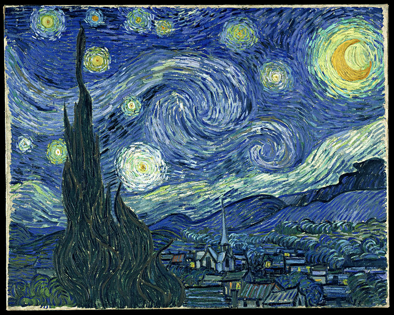
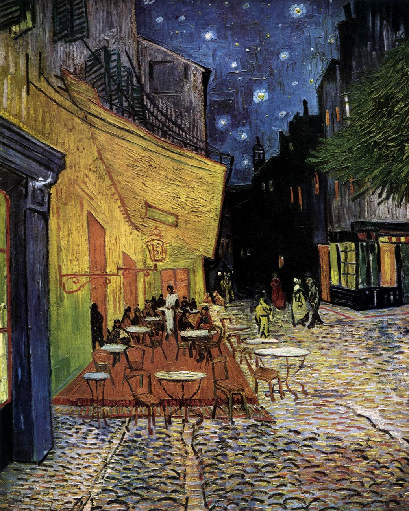
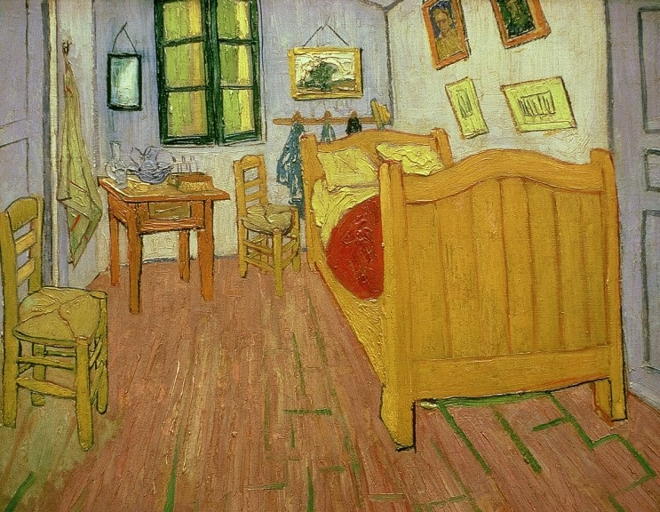

星月夜（ほしづきよ、フランス語: La nuit étoilée、オランダ語: De sterrennacht、英語: The starry night）は、
オランダの画家・ゴッホの代表作のひとつ。1889年6月、フランスサン＝レミ＝ド＝プロヴァンスのサン＝ポール・ド・モゾール
修道院の精神病院で療養中に描かれた。1941年、リリー・P・ブリス遺贈。ニューヨーク近代美術館の永久コレクションである。


『夜のカフェテラス』 （よるのカフェテラス、フランス語: Terrasse du café le soir）は、1888年9月に
フィンセント・ファン・ゴッホによって描かれた絵画。油彩。クレラー・ミュラー美術館蔵。

ファン・ゴッホの寝室（ファンゴッホのしんしつ、フランス語: La Chambre à Arles、オランダ語: Slaapkamer te Arles）
とは、1888年から1889年にかけてフィンセント・ファン・ゴッホによって描かれた絵画。油彩。同名の作品が3点あることが
認められている。「ゴッホの寝室」、「アルルの寝室」「ファンゴッホの部屋」、「アルルの部屋」と表記されることもある。
Vincent van Gogh